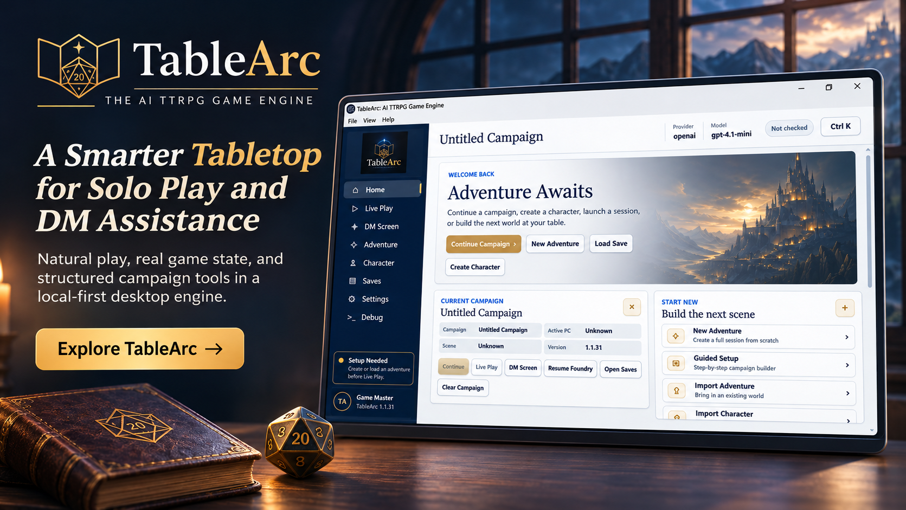
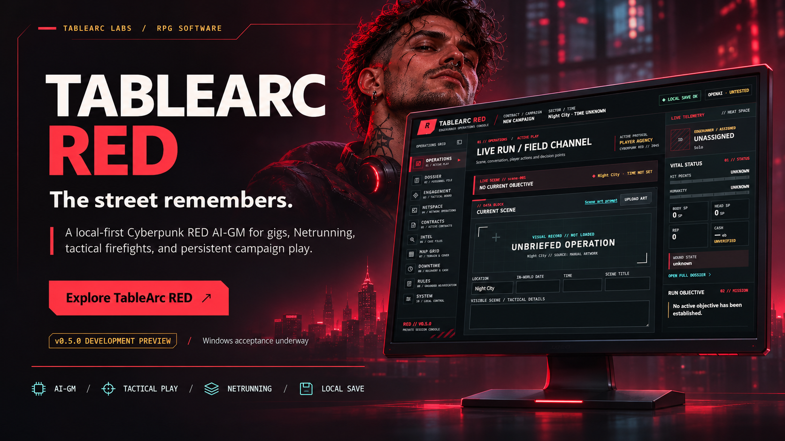
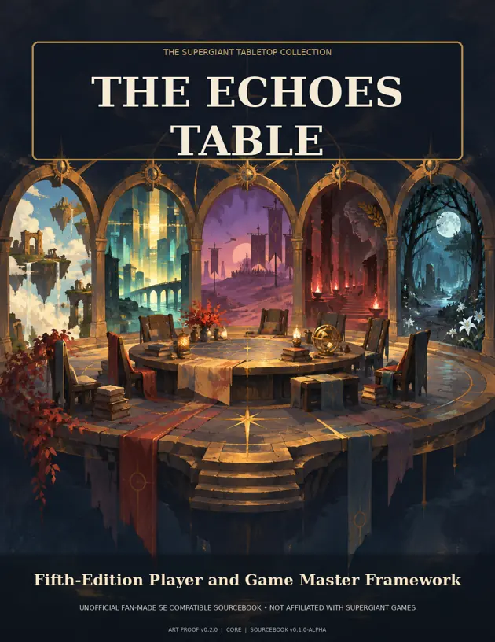
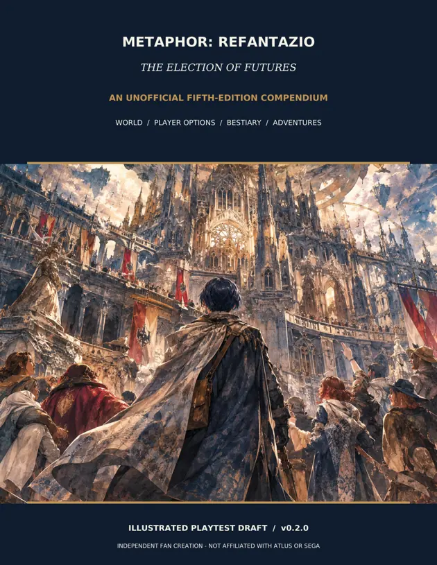

01 / GREENKAPPA INTERACTIVE
GreenKappa Labs / Featured projects
Independent software, original tabletop games, illustrated sourcebooks, and adventures built around decisions and consequences.

01 / GREENKAPPA INTERACTIVE
Six featured studio projects · Development concepts, illustrated sourcebooks, and prototypes · Not all projects are available for download or purchase
RPG software and playable systems built around agency, memory, persistent state and meaningful consequences.

TABLEARC / LOCAL-FIRST RPG ENGINE
Natural-language tabletop play with structured campaign state, rules procedures, maps and persistent saves.

TABLEARC RED / STANDALONE RPG SOFTWARE
Built for Cyberpunk RED gigs, Netrunning, tactical combat and continuing campaign consequences.
Original strategy and party games about deduction, exploration, negotiation and delightful trouble.
Illustrated tabletop sourcebooks and original adventures, including unofficial fan adaptations of extraordinary worlds.
Studio initiative / Tabletop roleplaying
Build a character. Enter a universe. Change what happens next. A growing library of illustrated tabletop sourcebooks, original scenarios, and adventures inspired by extraordinary worlds.
Five sourcebook collections · Four featured adventures · Unofficial fan-made works in development VOL. 01 / SERIES
Warframe: Origin System
Tenno, missions and a fifth-edition field guide
VOL. 01 / SERIES
Warframe: Origin System
Tenno, missions and a fifth-edition field guide

VOL. 02 / SERIES The Supergiant Collection Six volumes, including The Echoes Table VOL. 03 / SERIES The Oldest House Paranatural investigations and field operations
VOL. 04 / SERIES The Election of Futures A Metaphor-inspired fifth-edition compendium VOL. 05 / SERIES
The Cosmic Wheel Codex
Tarot magic, witchcraft, and authored fate
VOL. 05 / SERIES
The Cosmic Wheel Codex
Tarot magic, witchcraft, and authored fate
From The Records House to Dead Air: The Unanswered Line, adventures bring these settings to the table. Explore the full collection, including individual projects and development notes.
Explore sourcebooks & adventuresUtilities for the workflows, evidence, assets, and knowledge behind creative and technical work.
Early product designs / Working names
New utility products for developers, authors, designers and independent creators. These concepts are in requirements and technical-design development; no public installers or launch dates are available.
Trace the connections between forms, flows, lists, and approvals before a change breaks something.
Dependency graphs · Failure paths · Impact analysisIn development / Architecture designConnect critical claims to evidence, track decisions through revisions, and identify contradictory documentation.
Source lineage · Change review · Decision ledgerIn development / Requirements designCatch card and sourcebook manufacturing problems while they are still cheap to fix.
Bleed & trim · Asset checks · Deck inventoryIn development / Preflight specificationsKeep characters, timelines, canon and rules aligned across long-running fiction and tabletop campaigns.
Canon boundaries · Continuity graph · Version historyIn development / System designHow the work is approached
A game should tell you what your decision changed. Software should do the same. The aim is to make both interesting to use and possible to examine.
Find out what someone is trying to do before designing another screen or adding another mechanic.
Define which part of a system can change the facts, and keep those changes visible.
Use real workflows, diagnostics, and accessibility checks—not just a convincing demo.
Capabilities
A useful product needs working code, an interface people understand, documentation they can use, and tests that catch failures.
Provider integrations, grounded generation, local models, structured outputs, and human-readable failure handling.
Responsive interfaces, desktop packaging, stateful workflows, maps, dashboards, and user-facing diagnostics.
Power Platform, SharePoint, Power Automate, operational tracking, forms, notifications, and process redesign.
Architecture plans, testing protocols, decision records, sourcebooks, presentations, and accessible reference material.
About the builder
An independent developer and designer working across applied AI, interactive software, and original tabletop games.
Current work spans GreenKappa Interactive (TableArc and TableArc RED), three original card games, illustrated GreenKappa Worlds sourcebooks and adventures, and early-stage utility concepts under GreenKappa Tools. The work ranges from structured RPG state to physical spatial puzzles and AI-assisted party games.
Contact
Interested in testing a game, collaborating on interactive software, or helping shape a GreenKappa Tools concept? Get in touch.


 Small Gods, Large Debts
Small Gods, Large Debts